거북이 달리자
C270 & C920 스테레오 카메라와 LiDAR 기반
전정대 실내 3D 지도 작성

TurtleBot3 및 듀얼 웹캠 기반 데이터 수집 로봇 구축과
수집 데이터를 활용한 실내 공간 3D 재구성
실내(전정대) 주행 데이터 수집 및 LiDAR·Odometry·카메라 bag 데이터 후처리를 통한 3D 시각화 지도 구현을 초기 목표로 설정
TurtleBot3 위에 올린
이종 센서 스택
- 모바일 베이스 — TurtleBot3 Burger + OpenCR, 휠 odometry · IMU (/odom /tf /joint_states)
- 구조 센서 — LDS-01 2D LiDAR (/scan)
- 이종 스테레오 — Logitech C920(primary) + C270(secondary), REP-103 optical frame
- 소프트웨어 — ROS 2 Jazzy · Ubuntu 24.04, 시뮬레이션과 실물 토픽/프레임 이름 일치
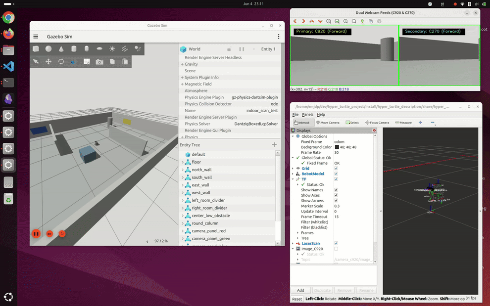
두 개 분과 구성을 통한 병렬 개발 진행
- TurtleBot3 하드웨어 구축 및 ROS 2 이식
- Gazebo 및 RViz 기반 가상 시뮬레이션 환경 구현
- Xbox 컨트롤러 활용 무선 원격 제어 구축
- 자동 부팅 및 원격 통신 환경 구축 (systemd, SSH)
- 듀얼 카메라 이미지 취득 및 스테레오 캘리브레이션
- 3D 포인트 클라우드 매핑 및 시각화 연구
- WebGL 기반 3D 웹 뷰어 개발
센서 수급 제약에 따른
스테레오 카메라 자체 제작
- RGB-D 대여 불가 — 초기 계획 핵심 센서였던 RGB-D 카메라 대여 불가에 따른 구성 변경
- 저가형 스테레오 제작 — 기본 지급 C270(HD) 및 개인 C920(FHD) 웹캠을 하드웨어 프레임 개조로 결합
- 플랫폼 업그레이드 — 연산 병목 현상을 해결하기 위해 Raspberry Pi 3에서 Pi 4로 교체
- 통신 환경 최적화 — ROS 2 Jazzy 및 Ubuntu 24.04 직접 빌드, systemd 기반 통신 환경(IP 브로드캐스트, SSH) 자동 활성화
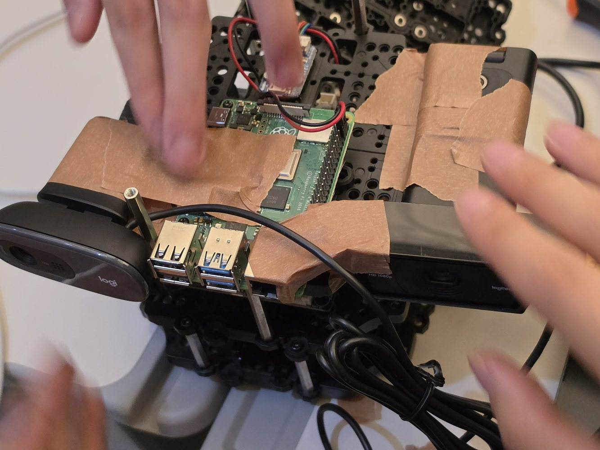
실측 데이터 수집에 앞선 시뮬레이션 기반 사전 검증
- Gazebo 시뮬레이터 상에 가상 카메라 구현 및 URDF/SDF 기반 카메라 링크·좌표계 정의
- ROS-Gazebo 브릿지 노드를 활용하여 가상 이미지 및 카메라 정보 토픽 변환
- RViz2 상에서 로봇 모델, LiDAR 측정 정보, TF 트리 및 스테레오 카메라 데이터 연동 검증
- 실물 데이터와의 일관성 확보를 통한 시뮬레이션 기반 데이터 검증 프로토콜 구축
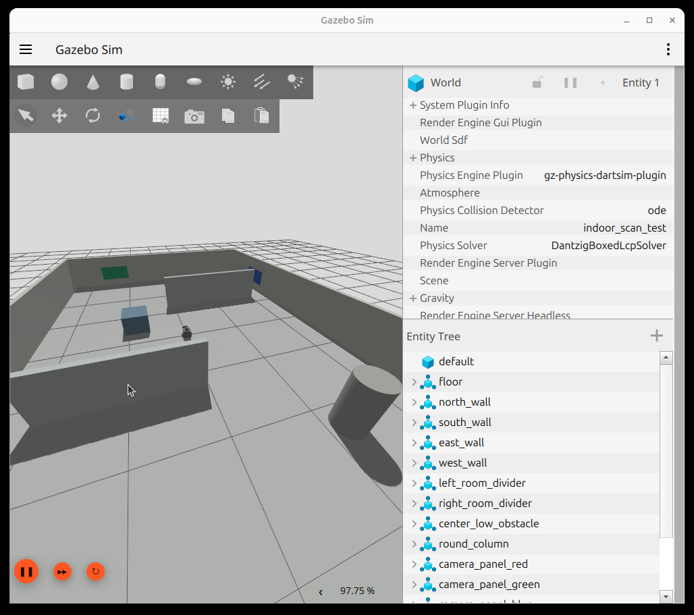
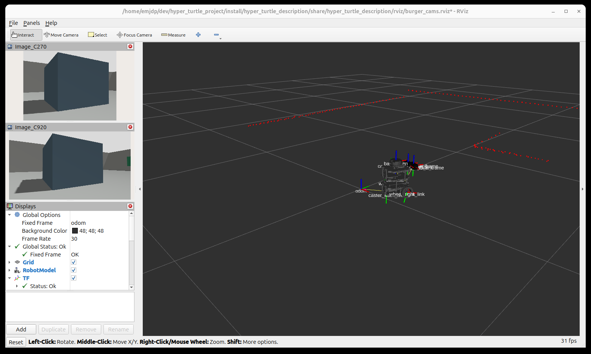
실물 로봇 데이터 수집 파이프라인
- 센서 구성 — turtlebot3_node · usb_cam · TF/camera frame 연결
- 원격 조종 — Xbox 조이스틱 및 UDP 브릿지를 활용한 TwistStamped 제어 정보 수신 (DDS 불안정 우회)
- 실험 자동화 — 원격 제어 스크립트를 통한 SSH 기반 로봇 조작, 실행 및 자동 데이터 수집
- 기록 — rosbag2를 활용한 2D LiDAR 데이터, 오도메트리 정보 및 스테레오 이미지 일괄 취득
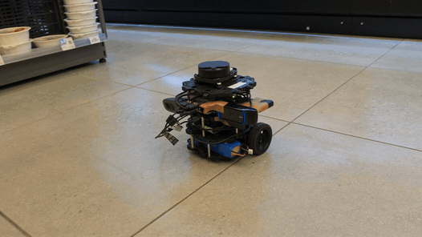
비전 파이프라인 — 표준 처리 아키텍처
실측 데이터 획득 과정에서 발생한 시스템 제약 및 예외 사항은 다음 장에 기술함
스테레오 매칭 데이터의 기하 왜곡 및 포인트 분산 발생
기존 알고리즘 기반 포인트 클라우드 매핑 결과, 평면 구조물의 윤곽이 왜곡되고 포인트가 분산되는 현상이 식별됨. 주행 데이터셋(bag) 간의 ICP 정합 수행 후에도 좌표계 누적 오차로 인해 공간 형상 복원에 한계 노출.
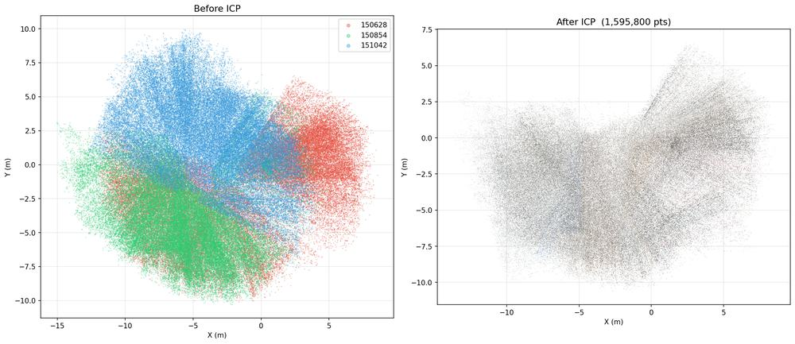
복합적 오류 발생 핵심 요인 분석
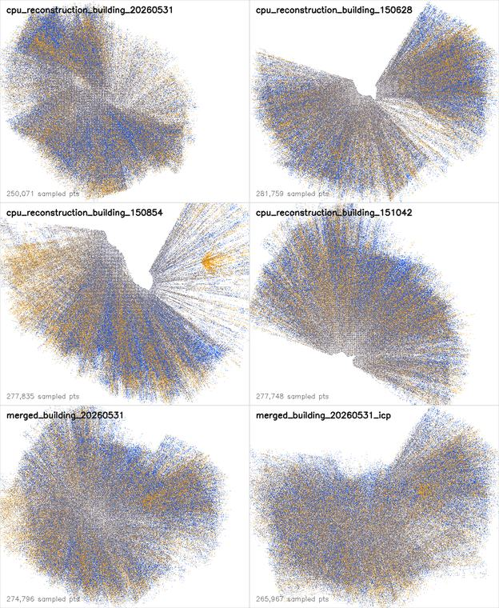
오류 데이터 파라미터 보정 후 재시험 결과 및 한계 분석
카메라 내부 파라미터 복구, 프레임 정렬, 기준점 동기화 등의 후처리를 진행하고 스테레오 매칭 과정을 재수행하였으나, 매칭 밀도의 물리적 한계로 인해 희소 포인트 클라우드(Sparse Point Cloud) 획득에 머무름.
- 협소한 스테레오 기선 거리(Baseline) — 물리적 장착 공간 제약으로 기선 거리(10cm 미만) 부족 및 변위 정밀도 한계
- 이종 카메라 결합 한계 — 상이한 렌즈, 시야각, 조리개 값으로 인해 양방향 이미지 왜곡 양상 불일치
- 측정 환경 노이즈 — 낮은 고도의 주행 시야각, 단조로운 복도 질감(Texture) 및 조명 반사로 왜곡 가중

고정밀 LiDAR 데이터를 기하학적 기준으로 설정
- 대안 아키텍처 수립 — 오차가 큰 스테레오 매칭 대신 LDS-01 LiDAR 데이터를 환경 구조의 기준으로 채택
- 포인트 데이터 정제 — 유효 측정 범위 외부의 아웃라이어 제거 및 실제 환경 스케일 매칭 수행
- 3D 벽면 수직 압출 — 정밀 2D 평면도 데이터 기반 가상 높이값(2.2m)을 부여하여 입체 복도 구조 가시화
- 구현 기법의 실용성 — 전방향 3D Reconstruction 대신, 2D 구조를 3D 입체 기하 구조물로 전환하는 기법 적용
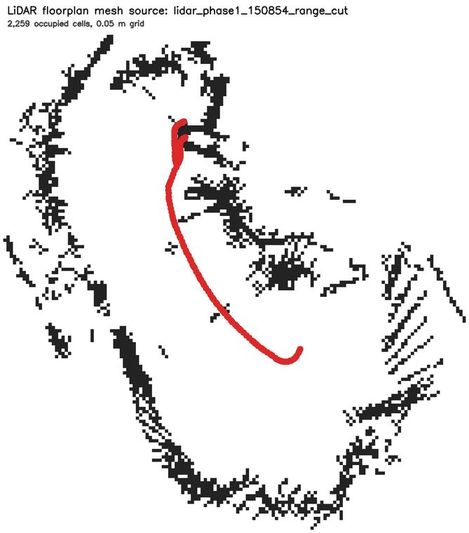
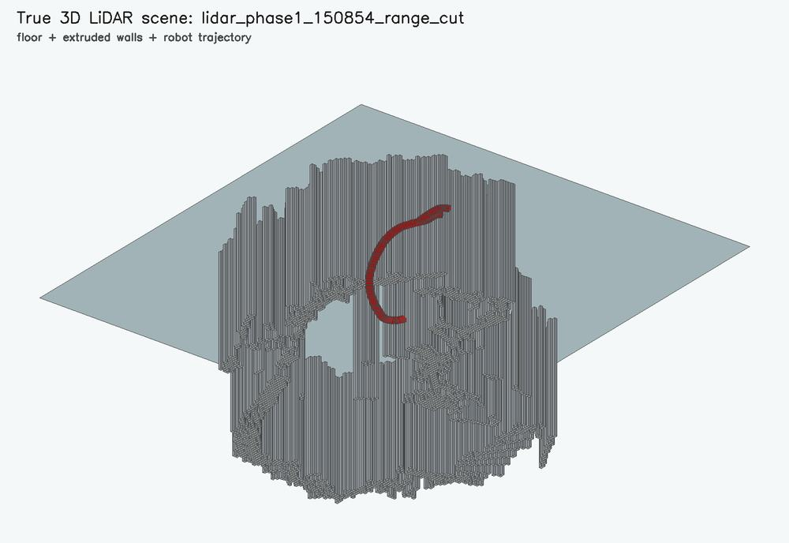
3D 입체 기하 구조물과 실측 영상 정보의 융합
- 키프레임 기반 포토 매핑 — 취득한 C920 이미지 프레임을 추정 경로의 노드 좌표계와 연동하여 2.5D 투사 수행
- 이미지 스티칭 — 연속 프레임 간의 특징점을 정합하여 광시야 파노라마 텍스처 데이터 구축
- 멀티노드 가상 투어 — 다중 주행 지점의 파노라마를 연동하여 단일 WebGL 뷰어 플랫폼에서 통합 표출
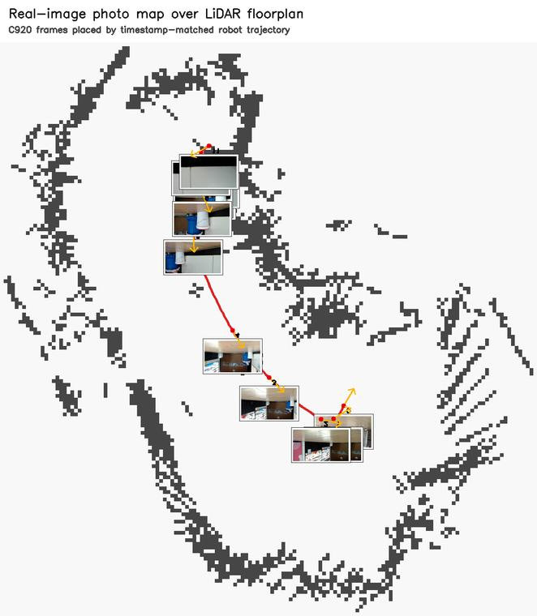
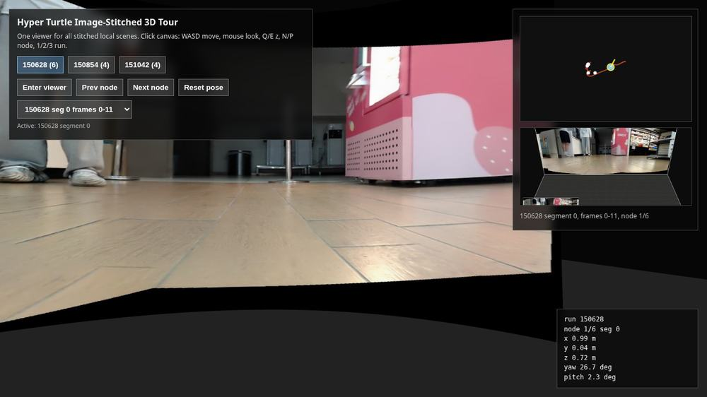
LiDAR 구조 및 주행 포즈 추정 연계 WebGL 3D
융합 지도
- 특징 기반 매핑 기법 — LiDAR 기반 기하 구조 프레임에 이미지 데이터 피처 투사 및 텍스처 매핑
- WebGL 뷰어 최적화 — 패널의 상대 Yaw 값을 활용한 회전 정합 최적화식 적용
- 물리적 잔존 오차 — 2D LiDAR 센서와 카메라 간의 높이(Z축) 불일치 및 특징점 추출 환경의 제약
- 연구 기여도 — 고가의 3D 스캔 인프라 대안으로, 제한된 시스템 구성 내에서 실용적이고 접근성 높은 가시화 맵 복원 결과 도출
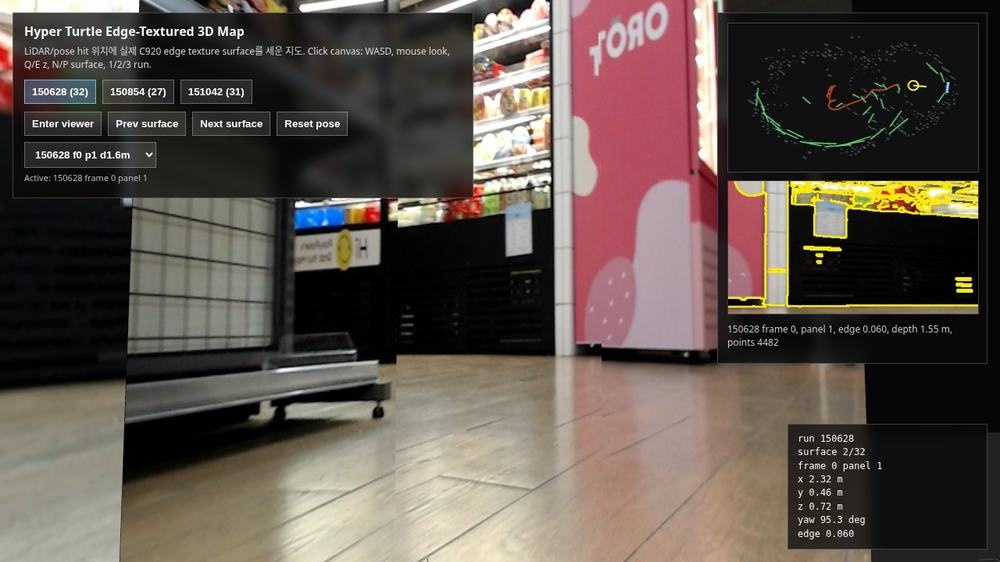
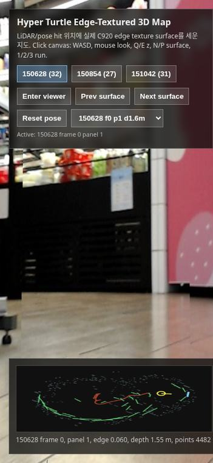
달성 성과 및 향후 연구 한계 분석
- 이종 스테레오 카메라 및 LiDAR 센서 연계 실측 데이터 취득 환경 구축
- 시뮬레이션 환경 구축 및 실물 센서 간 입출력 규격 일치
- LiDAR 기반 2D 도면 및 입체 벽면 매핑, WebGL 뷰어 시각화
- 센서 하드웨어 한계 — 초저가 이종 스테레오 구성에 따른 기선 거리 확보 및 캘리브레이션 정밀도 확보의 제약
- 데이터 무결성 문제 — 초기 캘리브레이션 정보 소실 및 오도메트리 원점 오차를 후처리 보정 알고리즘으로 극복
- 동작 플랫폼 제약 — 전원 전압 제약으로 인한 최단 작동 시간, 모터 주행 속도 병목, 마운트 진동 노이즈 유입
제한된 스테레오 카메라 구성에 따른 Dense Stereo 복원 한계를 규명하고,
높은 신뢰성의 LiDAR 기반 기하 구조와 파노라마 텍스처 매핑을 결합한
실용적 WebGL 3D 맵핑 구현 방식으로 목표를 전환하여 달성함
Q & A
질문 및 답변 시간 — 발표를 경청해주셔서 감사합니다.